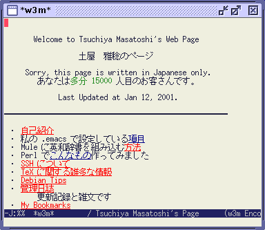

[ English / Japanese ]
Emacs 上で動作するブラウザと言えば，普通 W3 のことですが，動作が非常に遅いので，なかなか常用しようという気になれません．
それに対して，w3m というテキストベースで動作するブラウザがあり， 非常に軽快に動作するので重宝しているのですが， 端末に移動しなければいけないのが面倒です．
そこで，w3m を HTML の rendering engine として使用し，表示とインタフェースのみを Emacs で動かすようにすればいいんじゃないだろうか，ということを考えました．
XEmacs または Emacs21 では画像のインライン表示が可能です． どちらが本物か見比べてみてください． 動作する様子を具体的に見てみたい方は，x11rec で撮影したビデオをご覧ください．
emacs-w3mは，CVSを使って共同開発しているので，以下の手順で最新版が入手できます．
% cvs -d :pserver:anonymous@cvs.namazu.org:/storage/cvsroot login CVS password: # パスワードは設定されていません．単に Enter/Return キーを押してください． % cvs -d :pserver:anonymous@cvs.namazu.org:/storage/cvsroot co emacs-w3m
また，ViewCVS でソースを閲覧することもできます．
最新版の w3m をインストールしてください(詳細については「w3m のバージョン」を参照)．
もしあなたが XEmacs 21.x をお使いならば，必ず gifsicle プログラムをインストールして下さい． 現在すべての XEmacs 21.x にオプティマイズされたアニメーション gif が正常に表示されなかったりある種のインターレース gif を表示しようとするとクラッシュしてしまうバグがあります．emacs-w3m ではこれを使って gif データを XEmacs 21.x で扱える形式に変換します．
もしあなたが，XEmacs または Mule-2.3 をお使いならば， APEL を先にインストールしておく必要があります．
また，emacs-w3m は「新しい custom」が必要です．
もしあなたが Mule-2.3 をお使いならば，emacs-w3m
をインストールする前にそれをインストールしなければなりません．
詳細は APEL に附属の
README.ja
をご覧下さい．
Emacs-w3m は regexp-opt.el(c) モジュールを必要としますが，
古い Emacsen (例えば Mule 2) にはありません．
もしあなたがそんなバージョンの Emacs を使っているのならば，
emacs-w3m をインストールする前に以下のように
regexp-opt.el(c) モジュールをインストールしなければなりません．
% cp attic/regexp-opt.el /usr/local/share/mule/site-lisp % cd /usr/local/share/mule/site-lisp % mule -q -no-site-file -batch -f batch-byte-compile regexp-opt.el
もしあなたが，emacs-w3m の shimbun ライブラリを使いたいとお思いならば， FLIM パッケージが必要です． FLIM は，APEL に依存していることに注意してください．
shimbun ライブラリについて更に詳しくは，
README.shimbun.ja
をご覧下さい．
configure スクリプトを実行してください．
% ./configure
APEL や FLIM などの必要なモジュールが， 標準的ではないディレクトリにインストールされている場合には， --with-addpath オプションを使って，そのディレクトリを指定する必要があります．
% ./configure --with-addpath=/opt/share/apel:/opt/share/flim
同梱されている emacs-lisp のソースファイルを適当なディレクトリにインストールするため， 次のコマンドを実行してください．
% make % make install
加えて，XEmacs や Emacs21 用のアイコンを，以下のようにインストールすることができます．
% make install-icons
install の代わりに install-package を使うと，XEmacs の package としてインストールすることもできます．
% make % make install-package
この場合 install-icons を実行する必要はありません．
~/.emacs に追加してください．
(autoload 'w3m "w3m" "Interface for w3m on Emacs." t) (autoload 'w3m-find-file "w3m" "w3m interface function for local file." t) (autoload 'w3m-browse-url "w3m" "Ask a WWW browser to show a URL." t) (autoload 'w3m-search "w3m-search" "Search QUERY using SEARCH-ENGINE." t) (autoload 'w3m-weather "w3m-weather" "Display weather report." t) (autoload 'w3m-antenna "w3m-antenna" "Report chenge of WEB sites." t)
このプログラムは，w3m のバージョンに強く依存していますので， なるべく最新の w3m を使うようにしてください． 最新は2001年12月19日に公開された w3m-0.2.3.1 で， そのソースは以下の場所から入手できます．
emacs-w3m についての情報交換を行うためのメーリングリストを開設しています．
参加を希望される方は，emacs-w3m-ctl@namazu.org
宛に以下のような内容のメールを送ってください．
subscribe ANATANO Namae
上記サンプル中の「ANATANO Namae」という部分は，実際の名前に置き換えてください．
メーリングリスト本体のアドレスは，emacs-w3m@namazu.org です．
また，メーリングリストの過去記事も公開されています．
不具合報告などは emacs-w3m@namazu.org 宛にお願いします．
{kind=link}
{kind=link}